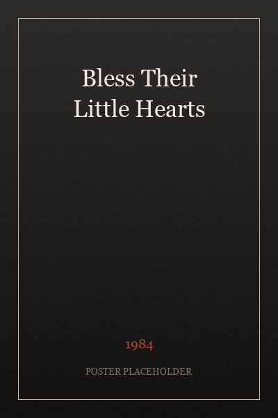
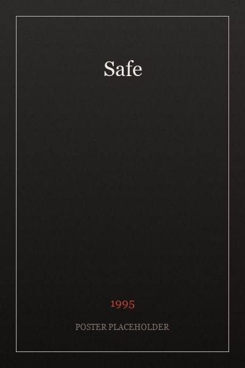
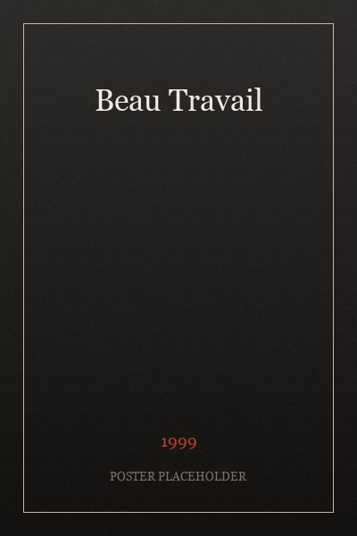
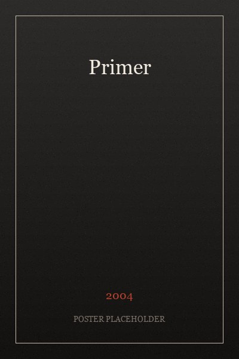
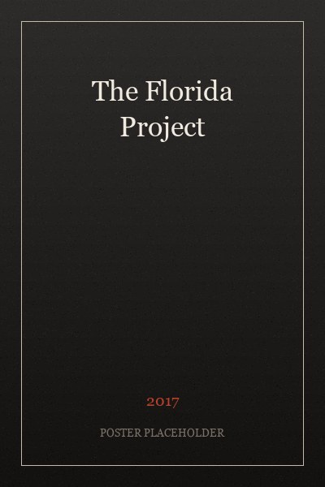
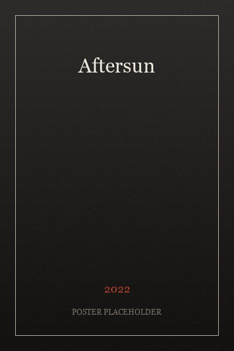

Bless Their Little Hearts
The film that taught me what independence actually costs.
Favorite films
Not a canon — just the films that taught me how to watch, and that I still argue about. Drag the row, or use the arrows.
— On the shelf

The film that taught me what independence actually costs.

Illness as the first genre of the platform era.

Proof that a film can end with a dance and lose nothing.

Made for $7,000 — still the best argument against scale.

The last American film that trusted its own location.

The A24 film that isn't quite an A24 film, which is the point.